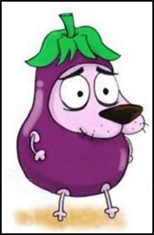
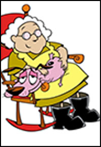
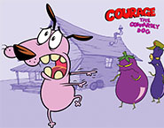
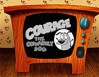
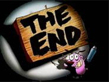

|

|

|
Courage
the coward dog
|

|
|

|

|
《膽小狗英雄》（英文：Courage the Cowardly Dog）
，是一齣美國電視動畫。
作者John R. Dilworth在《妙妙卡通秀》（What A Cartoon）內，因創作〈膽小狗大戰外星雞〉（The Chicken From Outer Space）於1995年播出，
並入圍隔年的奧斯卡最佳動畫短片而一舉成名，因此奠定《膽小狗英雄》這部作品的地位。
-
First season:
-
可怕的小貓旅館/香燉老奶奶肉
-
邪惡黑影/殘酷鴨博士
-
大腳怪物/生氣爆炸力
-
床墊惡魔/神經佛瑞德
-
吃人潛鼠/母子情深
-
外太空鴨兄弟/中間的雪莉
-
無名小鎮的駝子/天鵝神求婚記
-
外星鴨復仇記/到小鎮中心之旅
|
-
Second season:
-
魔法樹/藍迪機器人
-
家族企業/香蕉王國
-
實驗小老鼠/拯救太阳
-
蒼蠅英雄/甜點比賽
-
航海歷險記/移植
-
不滿的房子/沙鯨的故事
|
Description of charactors.
CourageA coward purple dog
adopted by Muriel.
Murielloves Courage
a kind woman.
Eustacebad manner
a useless man.
Computerwhich can speak
courage's friend.
Dr.Vindalooa worse doctor
loves money.
Eustace's moma crazy bitch
just like Eustace.
click me